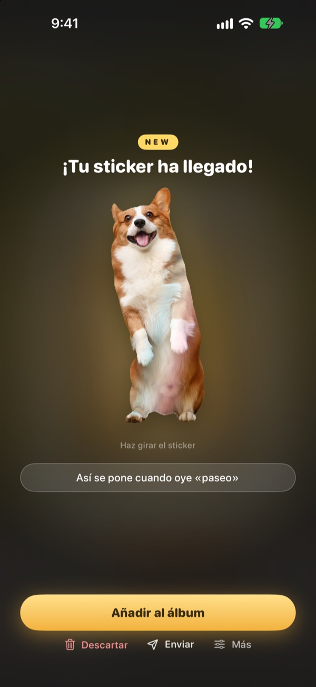
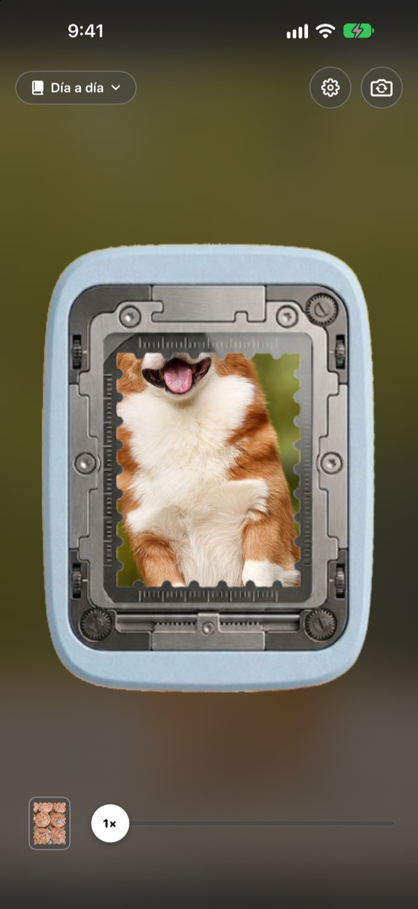
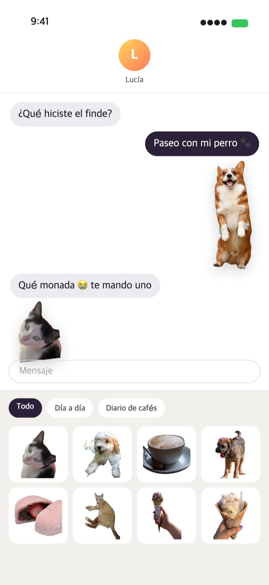
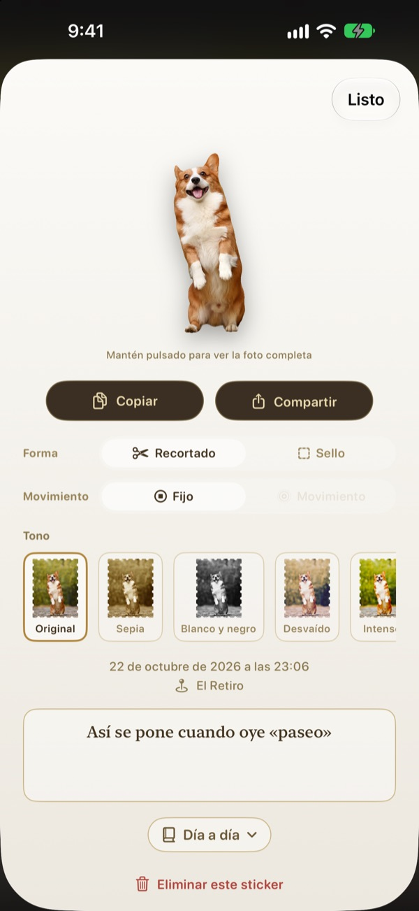
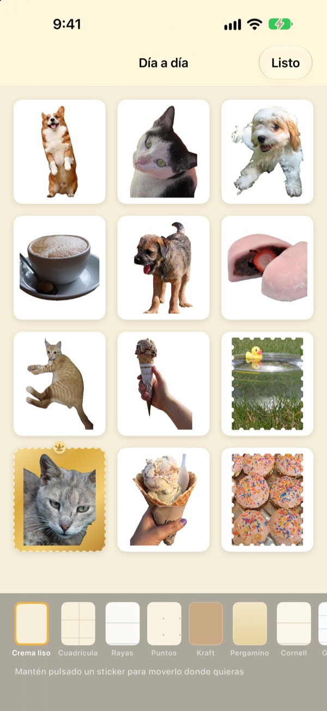

Mantén pulsado
y el momento es un sticker
Encuadra la escena en la ventana de la perforadora, mantén pulsado y suelta. Tu perro sale recortado con su propia silueta, con el breve movimiento de antes y después de pulsar. Envíalo al momento desde Mensajes o el teclado.
Todas las funciones son gratis. Tus stickers y fotos se quedan en tu dispositivo.

Arranca uno tú mismo
Elige una escena, mantén pulsado el botón de la perforadora y suelta. Después, prueba otra forma y otro tono.
Los momentos más monos se quedan dormidos en la fototeca
Pillas a tu perro sacando la lengua. Para mandarlo como sticker tienes que buscar la foto, recortarla y abrir otra app de stickers. Para entonces, la conversación ya va por otro tema. Punching arranca el sticker en el mismo sitio donde haces la foto, y en cuanto lo guardas aparece en el cajón de stickers de Mensajes.
Lo importante, recortado; el paisaje, en sello
Si hay algo que recortar, como una persona, una mascota o un objeto, obtienes solo eso. Si no lo hay, como en un paisaje, se arranca como un sello con borde perforado.
También se guarda el breve movimiento de antes y después de pulsar, así que el sticker se mueve.

Directo a Mensajes y al teclado
Los stickers que arrancas aparecen en el cajón de stickers de Mensajes. Activa el teclado de Punching y podrás elegirlos y pegarlos también en otras apps.
Los stickers con movimiento llegan moviéndose. Mantén pulsado uno para copiarlo y pégalo donde quieras.

Forma y tono, también después
Cambia cuando quieras entre recortado y sello, entre movimiento y fijo. La foto original se conserva, así que sigue igual de nítido que el primer día por muchas veces que lo cambies.
Elige un tono entre Original, Sepia, Blanco y negro, Desvaído, Intenso y Cian, y añade unas palabras, la fecha y el lugar.

Reúnelos en álbumes, imprímelos en papel
Crea un álbum por tema y también podrás elegir álbum por álbum en Mensajes y el teclado. Escoge páginas de kraft, cuadrícula, rayas o pergamino y ordénalos a tu gusto.
Convierte un álbum en un PDF para imprimir con líneas de corte en forma de sello e imprímelo directamente en papel adhesivo.

Empezar es cosa de tres pasos
- 1
Encuadra
Mete lo que quieras en la ventana del centro de la cámara.
- 2
Mantén y suelta
El sticker se arranca en cuanto sueltas.
- 3
Guárdalo y envíalo
Añádelo a un álbum y ya lo tienes en Mensajes y el teclado.
Dónde usarlo y dónde cambiarlo
- Mensajes
- ＋ junto al campo de texto ▸ Stickers ▸ Punching Stickers
- Otras apps
- Activa el teclado de Punching, cámbialo con la tecla del globo, elige y pega
- En cualquier sitio
- Mantén pulsado un sticker para copiarlo y pégalo
- Stickers en papel
- ⋯ en un álbum ▸ Usar ▸ Hoja de stickers para imprimir (PDF)
- Páginas y orden
- ⋯ en un álbum ▸ Decorar libremente
- Fotos antiguas
- Importar desde Fotos, dentro de un álbum
- Forma al arrancar
- Ajustes ▸ Arrancar ▸ Forma predeterminada
- Ver el movimiento
- Ajustes ▸ Vista ▸ Reproducir movimiento automáticamente
- Abrir rápido
- Abrir la cámara de Punching desde Atajos o el centro de control
Los ajustes están en el botón del engranaje, arriba a la derecha de la cámara.
Preguntas frecuentes
Mi sticker no se mueve.
En la cámara, arriba a la derecha, ve a Ajustes ▸ Vista y comprueba que Reproducir movimiento automáticamente esté activado. Luego toca el sticker y comprueba que Movimiento esté activado en Forma. El movimiento siempre se guarda, así que puedes activarlo cuando quieras. Las fotos importadas de la app Fotos son una sola imagen, por eso no se mueven.
Me sale con forma de sello y no recortado.
Las escenas sin nada que recortar, como un paisaje, se arrancan automáticamente con forma de sello. Toca el sticker para cambiarlo en Forma cuando quieras. Si prefieres sellos desde el principio, cambia Ajustes ▸ Arrancar ▸ Forma predeterminada.
No veo mis stickers en Mensajes.
En Mensajes, toca el botón ＋ junto al campo de texto ▸ Stickers y busca Punching Stickers. Aparecen en cuanto arrancas al menos un sticker en Punching y, si tienes más de un álbum, puedes verlos álbum por álbum. Tienes los pasos detallados en Ajustes ▸ Usar ▸ Usar en Mensajes y el teclado.
¿Cómo activo el teclado?
En Ajustes ▸ Usar ▸ Usar en Mensajes y el teclado, toca Abrir Ajustes y activa Teclados ▸ Punching Stickers. Para pegar stickers hace falta «Permitir acceso completo», pero el teclado nunca lee ni envía lo que escribes y nunca se conecta a internet. Después, en cualquier app, toca la tecla del globo para cambiar a Punching Stickers.
¿Puedo imprimirlos como stickers de verdad?
Toca ⋯ arriba a la derecha de un álbum ▸ Usar ▸ Hoja de stickers para imprimir (PDF). Se crea un PDF a 300 dpi de todo el álbum con líneas de corte en forma de sello, listo para papel adhesivo en la impresora de casa o en una imprenta. La Guía de impresión del mismo menú te explica cada paso.
¿Dónde están las colecciones que hice antes?
Desde la 1.0.1, los stickers se agrupan de una sola forma: en álbumes. Cada colección pasó a ser un álbum con el mismo nombre, con sus stickers, páginas y orden tal cual.
Aparece una luz verde en la barra de estado.
Es el indicador de uso de la cámara de iOS. Solo se enciende mientras la pantalla de la cámara está abierta. Al abrir un álbum, la cámara se detiene y la luz se apaga.
¿Qué pasa si elimino un sticker?
El sticker, su foto original y los datos de movimiento se borran del dispositivo para siempre y también desaparecen del cajón de stickers de Mensajes. No se pueden recuperar, así que piénsalo bien antes de borrar.
¿Dónde se guardan mis fotos y stickers?
Solo en tu dispositivo. No hay cuenta, ni servidor propio, ni anuncios. Lo único que sale del dispositivo son estadísticas de uso anónimas, informes de errores y los comentarios que decidas enviar. Tienes todos los detalles en la política de privacidad.
¿De verdad es gratis?
Sí, todas las funciones son gratis. Si te gusta, puedes dejarle una propina al desarrollador desde la app, pero las propinas no desbloquean nada.
¿Dudas o sugerencias? Escribe a leeo@kakao.com. Solemos responder en 2 o 3 días. También recibimos avisos de errores y sugerencias de funciones en GitHub (M1zz/StampCamera).